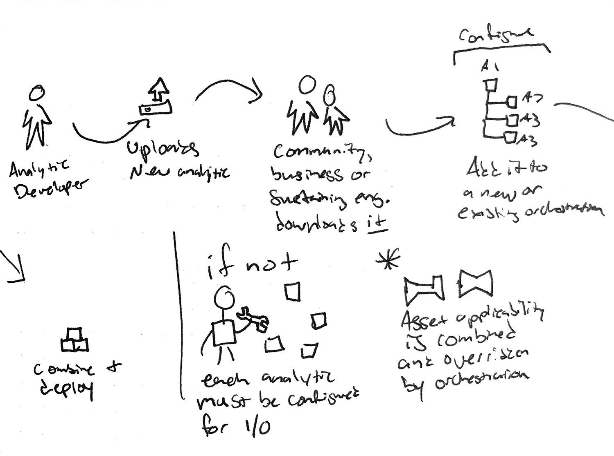
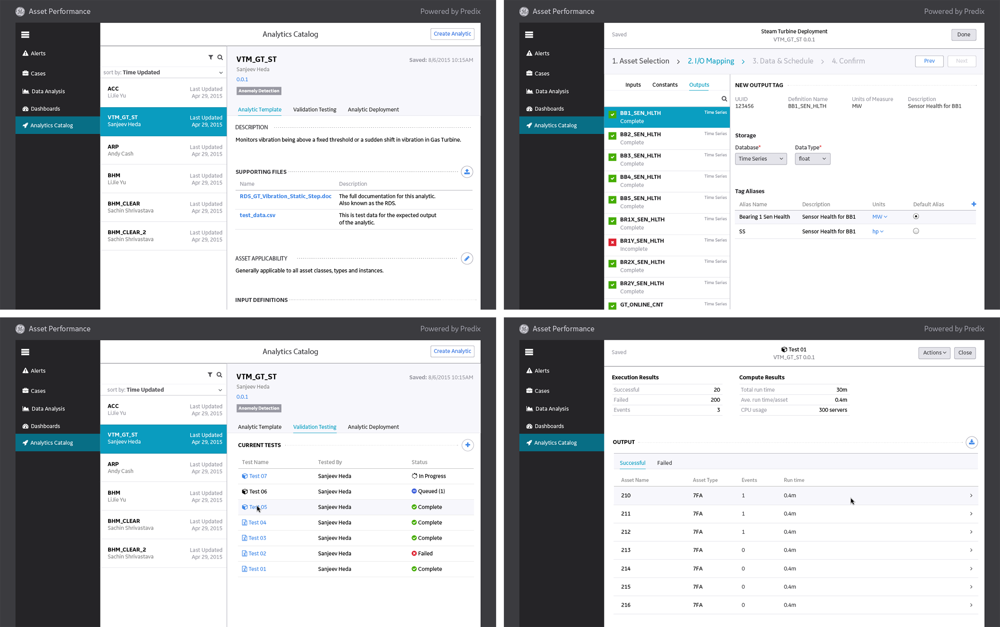

-
Asset Performance Management: Analytics
Connect industrial machines and data with analytics to improve asset monitoring and diagnostics.
-
Problem Statement
Analytic Developers and Deployment Engineers need to configure, deploy and manage analytics for industrial assets because properly deploying these analytics provides insights to analysts and customers.
-
Discovery
GE spans multiple industrial domains and has many different existing analytics solutions. I conducted interviews and evaluations of their current systems and processes.
-
Synthesis
After synthesizing the research I created a journey map which later evolved into a story map. The details of the story map helped build alignment between our product and platform teams on what we would deliver to our users.
 Design & Test
Design & TestDesigns for the first release went through multiple rounds of iteration and usability testing. I used paper prototypes and clickable PDFs, remote and in person, to validate my design decisions.
Challenges- Understanding all the existing solutions and different needs
- Aligning the product team with the platform team
- Working with and contributing to a new design system